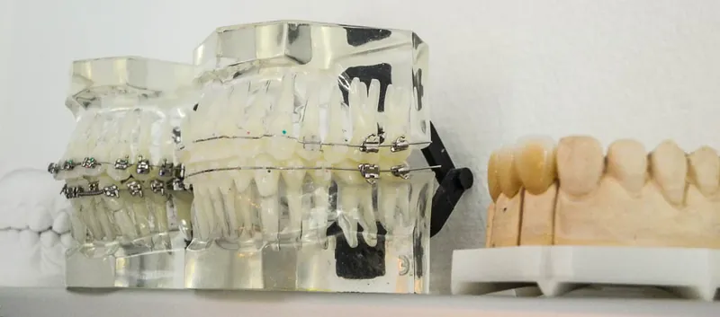

Zahnarzt in Wien-Brigittenau · seit 1997
Zähne erhalten – ein Leben lang.
Prophylaxe, Füllungen, Zahnersatz, Implantologie und Kieferorthopädie für Kinder und Erwachsene. Persönlich betreut von Dr. Roman Münzker und seinem Team. Alle Kassen & Privat.
Mo 11–19 · Di & Mi 10–18 · Do 8:30–14 Uhr

01Leistungen
Alles für Ihre Zähne – unter einem Dach.
Oberstes Ziel unserer Ordination ist die Zahnerhaltung. Von der Vorsorge über Füllungen und Zahnersatz bis zur Kieferorthopädie – als Kassen- oder Privatleistung.
-
01
Prophylaxe & Mundhygiene
Besonderes Augenmerk legen wir auf die Vorbeugung von Karies und Zahnbetterkrankungen (Parodontitis). Je nach Risiko ist eine halbjährliche bis jährliche professionelle Zahnreinigung sinnvoll – in einzelnen Fällen auch in kürzeren Intervallen.

-
02
Füllungstherapie
Seit 2025 ist Amalgam EU-weit verboten. Wir beraten Sie zu den Alternativen – vom Glasionomerzement bis zum Keramikinlay. Materialien im Vergleich

-
03
Zahnersatz
Sämtliche abnehmbaren und festsitzenden Möglichkeiten der Zahnersatztherapie: Kronen und Brücken (Metall-Keramik oder Vollkeramik), Teilprothesen – auch klammerlos – und Vollprothesen. Alle prothetischen Lösungen bei Bedarf auch implantatgetragen.

-
04
Chirurgie & Implantologie
Implantologie – vor allem auch zur Fixierung schlecht sitzender Teil- und Totalprothesen –, Wurzelspitzenresektion sowie Freilegung und, wenn notwendig, Entfernung retinierter Zähne, auch von Weisheitszähnen.

-
05
Kieferorthopädie
Festsitzende und abnehmbare Zahnspangen für Kinder und Erwachsene sowie unsichtbare Zahnspangen („eCligner“). Mehr zur Kieferorthopädie

-
06
Digitales Röntgen
Als modernes diagnostisches Hilfsmittel steht in unserer Ordination ein digitales und damit strahlungsarmes Kleinbild- und Panoramaröntgen zur Verfügung.

Sonderleistungen: Hausbesuche · Zahnschmuck · Expressreparatur von Zahnersatz · Reinigung von Zahnersatz im Ultraschallbad
02Kieferorthopädie
Gerade Zähne – in jedem Alter.
Das kieferorthopädische Leistungsspektrum unserer Ordination umfasst festsitzende und abnehmbare Zahnspangen für Kinder und Erwachsene sowie die sogenannten unsichtbaren Zahnspangen („eCligner“).
Dr. Münzker hat sich dafür umfassend fortgebildet – unter anderem mit dem KFO-Fortbildungsdiplom der Österreichischen Zahnärztekammer und der „eCligner Suisse“-Zertifizierung.
- Festsitzend
- Zahnspangen für Kinder & Erwachsene
- Abnehmbar
- Zahnspangen für Kinder & Erwachsene
- Unsichtbar
- Transparente Schienen mit eCligner

03Füllungstherapie
Amalgam ist Geschichte. Welche Füllung passt zu Ihnen?
Seit Anfang 2025 ist die Verwendung von Amalgam für Zahnfüllungen per EU-Verordnung verboten. Als Alternative kommen diese Materialien in Frage:
| Material | Eigenschaften | Haltbarkeit · Einsatz | Kosten |
|---|---|---|---|
| SteinzementLangzeitprovisorium | Das einzige Füllungsmaterial, bei dem die ÖGK die vollen Kosten übernimmt. Kann aber eher nur als Langzeitprovisorium angesehen werden. | ca. 6 Monate – 2 Jahre | ÖGK: volle Kostenübernahme |
| GlasionomerzementGIZ | Haltbarer als Steinzement. Gibt Fluor ab und hilft so, Sekundärkaries zu verhindern. Nicht für jede Indikation geeignet, wäscht sich aus, ist etwas rau und kann sich verfärben. | Kinder bis zum vollendeten 15. Lebensjahr, Schwangere und stillende Mütter | Alle Kassen für die genannten Gruppen · BVAEB & KFA: Kostenübernahme für alle Patientinnen und Patienten |
| CompositeZahnfarbene Kunststofffüllung | Das beste und haltbarste plastische Füllungsmaterial – für alle Indikationen geeignet. Die Verarbeitung ist aufwändig: Trockenlegung, Konditionierung des Zahnes, schichtweise Aushärtung. | Front- und Seitenzähne | Frontzähne (Eckzahn bis Eckzahn): von allen Kassen bezahlt · Seitenzähne: Privatleistung |
| Gold- & KeramikinlaysLaborgefertigt | Die beste Versorgungsmöglichkeit kariöser Läsionen im Seitenzahnbereich – passgenau im Labor gefertigt. | Zahn wird präpariert, Abformung, Fertigung des Formteils im Labor am Gipsmodell, Einsetzen (zementiert oder geklebt) | Privatleistung |
Welche Lösung für Ihren Zahn sinnvoll ist, besprechen wir gerne persönlich mit Ihnen in der Ordination.
04Die Ordination
Hell, freundlich und modern ausgestattet.
Ein Blick in unsere Räume in der Dresdner Straße: Behandlungszimmer, Wartebereich und eine eigene Spielecke für unsere jüngsten Patientinnen und Patienten. Ein digitales, strahlungsarmes Kleinbild- und Panoramaröntgen steht direkt in der Ordination zur Verfügung.
05Team
Erfahrung, die man spürt.
Seit 1997 führt Dr. Roman Münzker seine Ordination in der Brigittenau. Neben der allgemeinen Zahnheilkunde hat er sich laufend in Implantologie und Kieferorthopädie weitergebildet.

Werdegang
| 1992 | Promotion zum Doktor der gesamten Heilkunde |
|---|---|
| 1993 – 1995 | Ausbildung zum Facharzt für Zahn-, Mund- & Kieferheilkunde |
| 1996 – 1997 | Anstellung im Zahnambulatorium Floridsdorf der WGKK |
| 1997 | Gründung der Ordination in der Dresdner Straße |
| 2003 – 2005 | Implantologiekurs, Medos Austria |
| 2007 – 2008 | KFO-Kurs nach Prof. Richter |
| 2008 | KFO-Fortbildungsdiplom der Österreichischen Zahnärztekammer |
| 2010 – 2012 | Ausbildung zum Kieferorthopäden nach POS („Progressive Orthodontic Seminars“) |
| 2012 | „eCligner Suisse“-Zertifizierung |
| 2026 | 29 Jahre Ordination Dr. Münzker – Jubiläum im Oktober |


06Kontakt & Anfahrt
Wir freuen uns auf Ihren Besuch.
Termin nach telefonischer Vereinbarung
01 332 75 09Mo 11–19 · Di & Mi 10–18 · Do 8:30–14 Uhr
Ordination Dr. Roman MünzkerDresdner Straße 48/3/4
1200 Wien
Öffentliche Verkehrsmittel
| U6 | Dresdner Straße |
|---|---|
| 2 | Dresdner Straße (Straßenbahn) |
| 31, 33 | Höchstädtplatz (Straßenbahn) |
| 37A | Dresdner Straße (Bus) |
Ordinationszeiten
| Montag | 11:00 – 19:00 |
|---|---|
| Dienstag | 10:00 – 18:00 |
| Mittwoch | 10:00 – 18:00 |
| Donnerstag | 08:30 – 14:00 |
| Freitag – Sonntag | geschlossen |
Zum Schutz Ihrer Daten wird die Karte erst nach Klick geladen. Dabei werden Daten an OpenStreetMap übertragen.